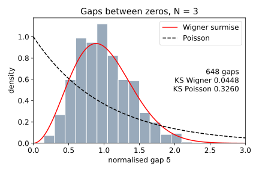
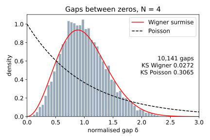
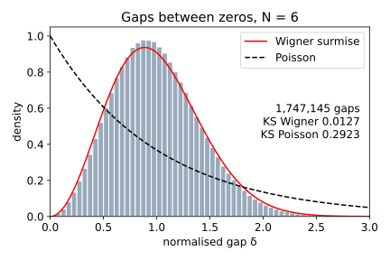
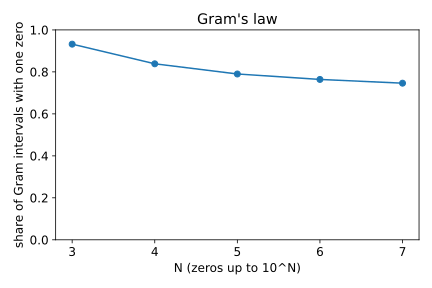

zeta results
zeta re-verified, with certified interval arithmetic, that every nontrivial zero of ζ(s) with 0 < Im s ≤ 10^N lies on the critical line and is simple, for each N shown. This is an independent re-computation of a known result, not a new one. Platt and Trudgian (2021) verified the same property up to 3·10^12, and Odlyzko's tables give the zeros themselves.
Verified counts
Published counts: OEIS A072080.
| N | mode | zeros found L | published N(10^N) | result |
|---|---|---|---|---|
| 2 | plain | 29 | 29 | equal |
| 3 | plain | 649 | 649 | equal |
| 3 | refine | 649 | 649 | equal |
| 4 | plain | 10142 | 10142 | equal |
| 4 | refine | 10142 | 10142 | equal |
| 5 | plain | 138069 | 138069 | equal |
| 5 | refine | 138069 | 138069 | equal |
| 6 | plain | 1747146 | 1747146 | equal |
| 6 | refine | 1747146 | 1747146 | equal |
| 7 | plain | 21136125 | 21136125 | equal |
| 7 | refine | 21136125 | 21136125 | equal |
Gap spacings
The normalised gap is δ_n = (m_(n+1) − m_n)·ln(m_n/2π)/2π, which rescales the spacings between consecutive zeros to mean 1; m_n is the midpoint of the certified bracket.
The contrast with Poisson is the lesson: independent points would pile up near zero gap, while the zeros repel each other. A small KS distance to the Wigner surmise can still be a statistical rejection at a large gap count, because the surmise is an approximation and convergence with height is slow.



Gram's law
A Gram point g_n is the solution of θ(t) = nπ, where θ is the Riemann–Siegel theta function.
| N | 0 zeros | 1 zero | 2 zeros | 3 zeros | 4+ zeros | exactly one | S |
|---|---|---|---|---|---|---|---|
| 3 | 22 | 604 | 22 | 0 | 0 | 0.9321 | 0 |
| 4 | 822 | 8504 | 810 | 6 | 0 | 0.8385 | 1 |
| 5 | 14568 | 109064 | 14304 | 132 | 0 | 0.7899 | 6 |
| 6 | 207322 | 1334838 | 202648 | 2337 | 0 | 0.7640 | 12 |
| 7 | 2698866 | 15771510 | 2632632 | 33117 | 0 | 0.7462 | 29 |
The zero brackets are certified. The Gram points are computed in double precision, not certified; S counts the brackets with a Gram point strictly inside, which bounds how much that matters. The zero above the last Gram point g_K ≤ 10^N falls in no interval.

Runs
Machine: Threadripper 3960X, 48 threads, Ubuntu 26.04
| N | refine | elapsed | peak RSS | binary commit | date | note |
|---|---|---|---|---|---|---|
| 2 | no | 0.53 s | 9.2 MiB | f935b23 | 2026-11-24 | |
| 3 | no | 0.71 s | 9.2 MiB | f935b23 | 2026-11-24 | |
| 3 | yes | 2.45 s | 9.2 MiB | f935b23 | 2026-11-24 | |
| 4 | no | 1.86 s | 10.7 MiB | f935b23 | 2026-11-24 | |
| 4 | yes | 19.89 s | 10.3 MiB | f935b23 | 2026-11-24 | |
| 5 | no | 6.87 s | 35.1 MiB | f935b23 | 2026-11-24 | machine also running other jobs |
| 5 | yes | 0:02:05 | 40.4 MiB | f935b23 | 2026-11-24 | machine also running other jobs |
| 6 | no | 0:02:24 | 395.0 MiB | f935b23 | 2026-11-24 | machine also running other jobs |
| 6 | yes | 1:04:45 | 394.5 MiB | f935b23 | 2026-11-24 | machine also running other jobs |
| 7 | no | 1:02:23 | 4654.9 MiB | f935b23 | 2026-11-24 | machine also running other jobs |
| 7 | yes | 35:52:45 | 4647.1 MiB | f935b23 | 2026-11-24 | machine also running other jobs |